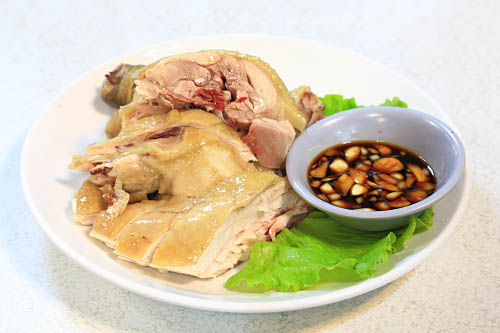

阿嬤的店
google評價：3.6★
店家資訊
地址：新北市烏來區烏來街30號
營業時間：早上11:00到晚上10:00
店家電話：02-2661-6422

推薦菜單
福山桂竹筍100元 現炸溪魚100元 現炸溪蝦100元
生炒鹿肉200元/350元 生炒獐肉200元350元
馬告煎蛋150元 客家小炒250元 高麗菜80元/100元/200元
大奶煲湯100元 金針湯100元/200元 鮮香菇湯100元/200元
顧客評論
因為是位於觀光區，所以價格難免小貴，但可以從菜單看出來有許多菜色都很特別，像是鹿肉、獐肉、鴕鳥肉、飛鼠等特殊料理，可以來這家店挑戰，其中的招牌菜是大奶煲湯也就是青木瓜燉湯，還有特別的馬告煎蛋，馬告是一種原住民用的辛香料，配上蛋非常新奇，桂竹筍也因為食材新鮮的關係，所以簡單的調味就很好吃。